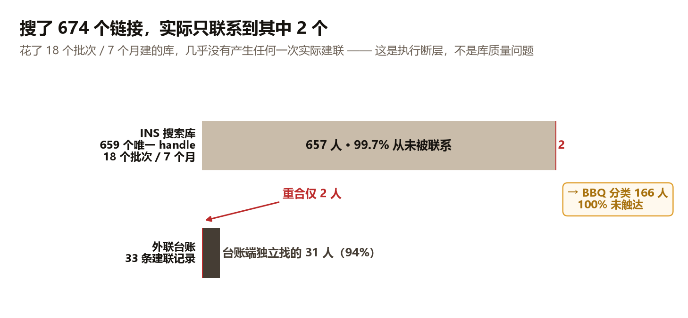
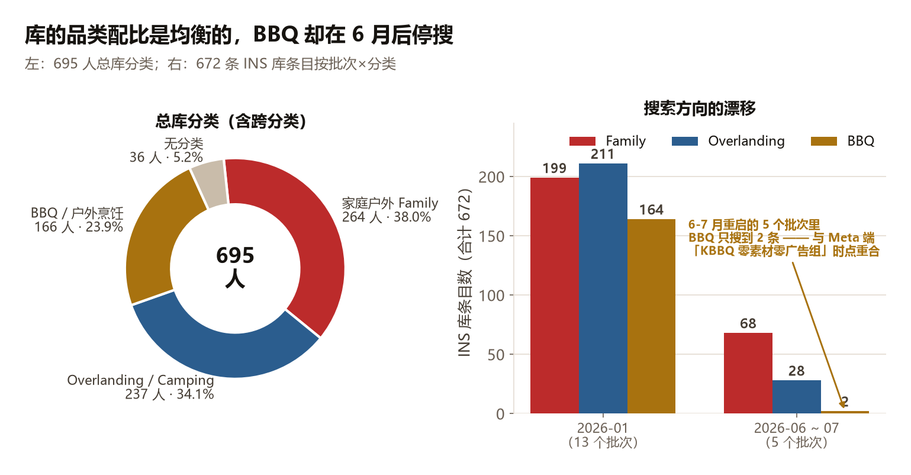
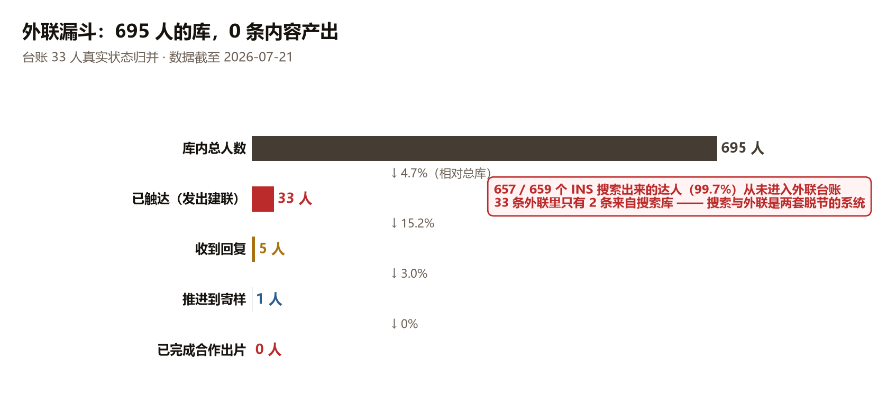
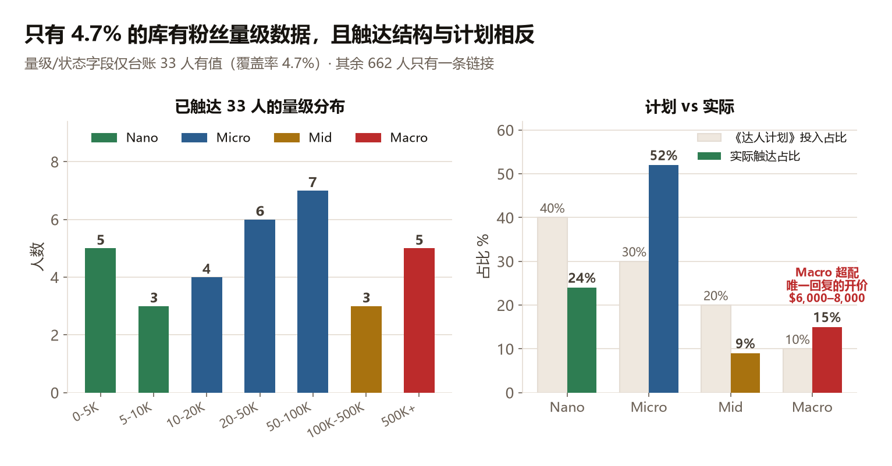

INS 搜索库 + 外联台账 + 其他达人三张表合并去重（并查集 Union-Find），再结合 Meta 账户数据反推「该联系谁」。
处理脚本：Python 3 / pandas 2.3.3 / openpyxl 3.1.5（PYTHONUTF8=1）。产出 influencer_master.xlsx（695 行 × 19 列，一行一人）。所有数字均由脚本实际处理原始 xlsx 得出。
| 项目 | 任务书描述 | 实际读取 |
|---|---|---|
INS达人搜索 sheet 行数 | 1220 行 | 396 行（含 1 行表头，395 数据行 × 3 列） |
| INS 库 Instagram 链接数 | 约 674 个 | 674 个（其中 672 个可解析为达人主页，✅ 与描述一致） |
达人台账 行数 | 约 998 行 | 33 行（有效数据行） |
其他达人 行数 | 未给 | 7 行 |
| 日期批次 | 18 个（2026-01-04 ~ 07-07） | 18 个（✅ 一致） |
推测：998 / 1220 可能是 Excel 里带格式的空行数或另一个版本的文件。源文件体积 2.5MB 但只有 33 行数据，主要体积来自嵌入对象/格式，不是数据行。如果甲方手上有更完整的台账版本，需要重新提供——目前这份台账只有 33 条外联记录。
fbclid、_t、_r、shop_region、igsh、utm_*、is_from_webapp、si、feature 等instagram.com/xxx → IG:xxx；tiktok.com/@xxx → TT:xxx；youtube.com/@xxx·/c/·/user/·/channel/ → YT:xxx/p/、/reel/、/explore/、/video/）解析失败 2 条（占 674 的 0.3%）：两条是帖子链接不是主页链接，无法反推达人 handle，已剔除并单独记录。
每条记录生成两类键：强键 平台:handle（精确匹配）；弱键 ~handle（跨平台同名）。
弱键是必要的——台账里一个人常常只填了 TikTok 链接，而 ID 字段就是他的 IG handle；不用弱键就会漏合并。弱键的误合风险在本数据集里可接受（这批 handle 都足够独特，未发现同名不同人的情况）。
| 来源 | 人数 |
|---|---|
| 仅 INS 搜索库 | 657 |
| 仅台账 | 30 |
| 仅其他达人 | 5 |
| INS库 + 台账 | 1（connography_） |
| INS库 + 其他达人 + 台账 | 1（travelinthoms） |
| 其他达人 + 台账 | 1 |
INS 库内部重复收录的 13 人（说明搜索时没有做去重）：miss.rover、rtmadani、robbyclark_t4r、backcountry.mom、mcnutt_bbq、_aswewander、elnick.adventures、meat.therapy、lifebehindthe79、theflyinghens、nomad.nesters、the_renegade_ramblers、redwhiteandbbq。另有 8 人同时出现在 2 个分类栏。

| 分类 | 人数 | 占比 |
|---|---|---|
| 家庭户外 Family（含跨分类） | 264 | 38.0% |
| Overlanding / Camping（含跨分类） | 237 | 34.1% |
| BBQ / 户外烹饪（含跨分类） | 166 | 23.9% |
| 无分类（台账/其他达人独有） | 36 | 5.2% |
纯单分类：Family 259 / Overlanding 229 / BBQ 163；跨分类 8 人。

| 批次 | BBQ | Family | Overland | 合计 |
|---|---|---|---|---|
| 2026-01-04 | 10 | 16 | 11 | 37 |
| 2026-01-05 | 18 | 15 | 17 | 50 |
| 2026-01-06 | 14 | 18 | 23 | 55 |
| 2026-01-07 | 0 | 5 | 8 | 13 |
| 2026-01-12 | 10 | 10 | 10 | 30 |
| 2026-01-15 | 10 | 10 | 10 | 30 |
| 2026-01-16 | 10 | 19 | 22 | 51 |
| 2026-01-17 | 20 | 20 | 20 | 60 |
| 2026-01-19 | 10 | 10 | 10 | 30 |
| 2026-01-20 | 20 | 20 | 20 | 60 |
| 2026-01-21 | 10 | 10 | 10 | 30 |
| 2026-01-22 | 10 | 10 | 10 | 30 |
| 2026-01-23 | 22 | 36 | 40 | 98 |
| 2026-06-18 | 0 | 31 | 5 | 36 |
| 2026-06-30 | 0 | 8 | 0 | 8 |
| 2026-07-01 | 0 | 6 | 11 | 17 |
| 2026-07-06 | 2 | 7 | 11 | 20 |
| 2026-07-07 | 0 | 16 | 1 | 17 |
| 合计 | 166 | 267 | 239 | 672 |
| 环节 | 人数 | 相对上一环 |
|---|---|---|
| 库内总人数 | 695 | — |
| 已触达（发出建联） | 33 | 4.7%（相对总库） |
| 收到回复（含 1 个回复后断联） | 5 | 15.2% |
| — 愿意免费置换 | 1 | 3.0% |
| — 要求付费/报价过高 | 3 | 9.1% |
| — 沟通中断（要求发多视频后不回） | 1 | 3.0% |
| 推进到寄样（等待发货） | 1 | 3.0% |
| 已完成合作出片 | 0 | 0% |
| 重复合作 | 0（33 人「重复合作」字段全部为「否」） | 0% |

触达渠道（有重叠，按状态字面统计）：邮件触达 14 人 / IG 私信 8 人 / TikTok 站内 7 人。
2025.9（20 人）和 2025.1（13 人）两个值，格式为「年.月」，与 INS 库的 2026 年批次日期口径不一致，无法据此计算触达到回复的时间周期。chaoey.ride，泰国）不在英语区，与 Meta 投放的 US 主战场不匹配| 达人 | 量级 | 粉丝 | 报价 | 状态 |
|---|---|---|---|---|
beerving_america | 500K+ | 538K | IG Reel $6,000 / TikTok $4,000 / Reel+TT转发 $8,000 / IG Story(3帧) $1,500 | 收到回复，价格太贵 |
travelinthoms | 50-100K | 73K | 1 Reel + 1 Story $3,500 | 收到回复，要求付费 |
报价区间：$1,500 ~ $8,000 / 单次交付。换算单粉成本：beerving_america IG Reel ≈ $11.2 / 千粉；travelinthoms ≈ $47.9 / 千粉（Mid 层反而更贵，因为 Macro 有议价空间）。
happy_no_mads 状态标注「收到回复，带报价」但佣金字段是空的——报价没被记录下来，这是台账的数据丢失。| 层级 | 实际触达人数 | 实际占比 | 甲方《达人计划》投入占比 | 偏差 |
|---|---|---|---|---|
| Nano（1k–10k） | 8 | 24% | 40% | 不足 |
| Micro（10k–100k） | 17 | 52% | 30% | 超配 |
| Mid（100k–500k） | 3 | 9% | 20% | 不足 |
| Macro（500k+） | 5 | 15% | 10% | 超配 |

Macro 超配是失败的直接原因之一——5 个 Macro 里唯一回复的 beerving_america 报价 $6,000-8,000，直接判死。
⚠️ derickthecamper 数据矛盾：量级标 50-100K 但最高粉丝数只有 9.3K，两个字段对不上，已在总库中原样保留，需甲方核对。
beerving_america（500K+，价格太贵）、keegjasper（500K+，TT已发未回）、connography_（20-50K，已发邮件未回）resellergrowth（20-50K，「后院用品带货，有烧烤箱爆款，客单价高」）—— 这是全台账最匹配 AroundFire 品类的带货型达人，目前状态只是「TT已发」未回复| 字段 | 有值人数 | 覆盖率 |
|---|---|---|
| 平台 handle | 695 | 100% |
| 分类 | 659 | 94.8% |
| 量级 / 粉丝数 | 33 | 4.7% |
| 状态 | 33 | 4.7% |
| 联系方式 | 22 | 3.2% |
| 备注 | 35 | 5.0% |
| 报价 | 2 | 0.3% |
| 素材 | 花费 | ROAS |
|---|---|---|
| evcinshome | $1,146 | 7.00 |
| cait 沙滩 | $2,702 | 6.31 |
| vanadvantures 简短口播 | $465 | 5.81 |
| ins帖子-Paige 桌子解说和展示-2 | $641 | 5.31 |
| evicnshome-2 | $1,649 | 5.08 |
| betweenus 口播 | $1,118 | 4.67 |
| 混剪-汽车露营（花费最高） | $5,577 | 4.00 |
用 evcins / cait / vanadv / paige / betweenus 五个关键词在 695 人总库（含 IG / TikTok / YouTube handle 和台账 ID）里做匹配：
| 广告素材名 | 库内匹配 |
|---|---|
| evcinshome | 0 条 |
| cait 沙滩 | 0 条 |
| vanadvantures | 0 条精确匹配（仅有形近的 caravanadventureaus，不能认定是同一人） |
| Paige | 0 条 |
| betweenus | 0 条精确匹配（库内有 lifebetweensummits、somewhere_in_between__，均非同一人） |
账户里 ROAS 最高的那批真人素材，全部不在这个达人库、也不在外联台账里。这批素材要么来自 Kickstarter backer、要么来自客户自己零散拿到的 UGC、要么是买断的素材库——总之它的来源没有被记录，也就无法复制。
evcinshome 只花了 $1,146，如果能复购 10 条同类内容，比继续搜 674 个陌生链接的性价比高一个数量级。按分类计数，Family 264 人（38%）反而是最大的一档，Overlanding 237（34%），BBQ 166（24%）。搜索端的品类配比是均衡的，而且 6–7 月的最新批次明确往 Family 倾斜（98 条里 68 条是 Family）——搜索方向的直觉是对的。
| 备注标签（一人可多标签，n=33） | 人数 |
|---|---|
| 露营 | 16 |
| 测评 / 带货 | 9 |
| 越野 / Overland / 4WD / 皮卡 | 8 |
| 家庭 / 情侣 / 有孩子 | 6 |
| Van / RV / 房车 | 6 |
| 烹饪 / BBQ / 咖啡 | 6 |
| 钓鱼 / 狩猎 | 4 |
| 女性主导 | 3 |
| 后院 | 2 |
resellergrowth 还是带货号不是场景号；而 Meta 端「家庭/后院」主题虽只测了 $211 但表现最好evcinshome、cait、vanadvantures、Paige、betweenus 五位创作者的联系方式与合作条件，建立复购。这 5 个素材合计花费 $7,021、ROAS 均值 > 5.5，是已被账户验证过的确定性资产| 优先级 | 画像 | 对应的 Meta 证据 | 库存 |
|---|---|---|---|
| P1-a | 35-60 岁女性主理的家庭/后院聚会号（多代同堂、招待朋友、节日聚餐场景） | 55-64 女性 ROAS 7.35 / CPA $30；65+ 女性 CPA $27；「家庭/后院」主题 ROAS 最高 | Family 分类 264 人待筛（handle 里带 mom/mama/nana/gran 等信号的仅 12 人，需人工过一遍主页） |
| P1-b | BBQ / 后院烧烤 / KBBQ 内容号 | KBBQ 词群搜索量 + 甲方已有 KBBQ Style Grill Grate 配件，但 Meta 端零素材零广告组 | BBQ 分类 166 人，100% 未触达 |
| P1-c | Fire pit table / 后院社交场景号 | fire pit table 96,440 是最大搜索池；后院主题 CPA $18（样本小但方向明确） | 库内「后院」标签仅 2 人，需补搜 |
resellergrowth（20-50K，后院用品带货、有烧烤箱爆款、客单价高）—— 品类匹配度全台账最高，状态停在「TT已发」yarnandthyme（50-100K，户外烹饪/厨艺/农场）—— 女性 + 烹饪 + 农场生活，是最接近 55-64 女性受众的现有人选，状态停在「TT已发」camp_and_coffee_outdoors（0-5K，甲方自己备注「很合适！」）—— Nano 层置换成本最低，双渠道已发未回，值得第三次跟进remnantoutdoorco（50-100K，等待发货）—— 唯一进入寄样环节的，必须盯到出片chaoey.ride，泰国）——虽然是唯一愿意置换的，但受众与 US 投放盘不匹配，只能做低成本素材源，不能作为种草主力vanadvantures 是「简短口播」，$465 小预算跑出 5.81；Paige 是「桌子解说和展示」；betweenus 是「口播」。花费最高的自制「混剪-汽车露营」$5,577 只跑出 4.00。chase.in.point（"画面精美，优质航拍，摄影师"）、keegjasper（"视频风格绝美"）、connography_（"电影感创作者"）—— 甲方在按「谁拍得好看」选人，但账户数据说买家买的是「谁讲得清楚」。这是选人标准上的方向性错误。
happy_no_mads 的报价（状态写「带报价」但佣金字段为空）derickthecamper 的量级矛盾（标 50-100K，粉丝数 9.3K）2025.9 / 2025.1 是年月还是别的）